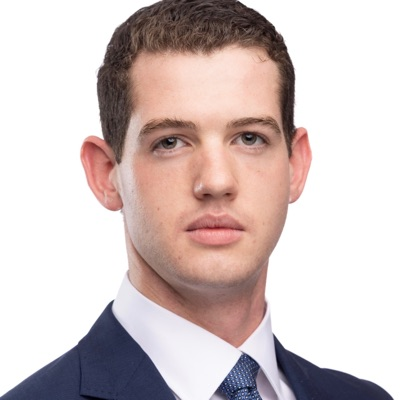
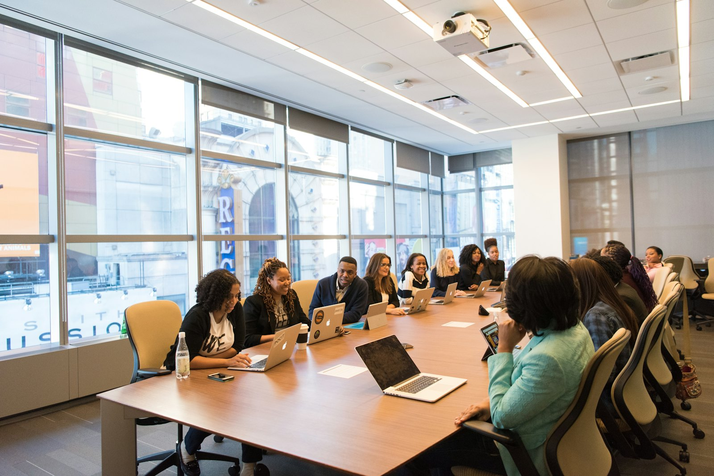
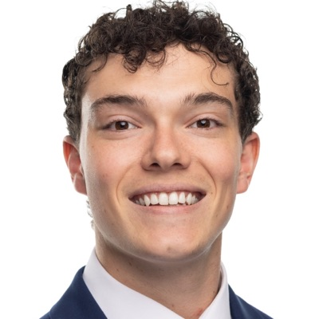
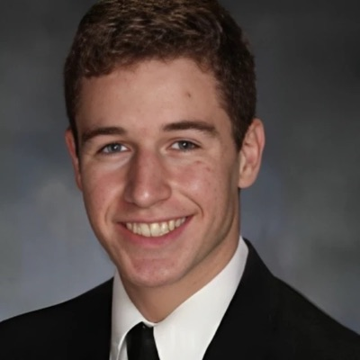
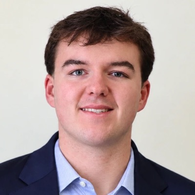
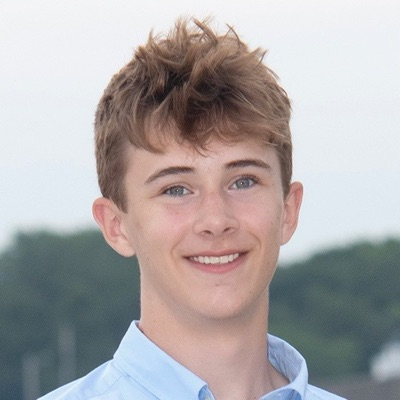

J. Hunter Howard ’27
Group Managing Partner
About HCG
HCG helps Hamilton students understand consulting and prepare for recruiting. Quill gives selected participants practical experience through client work.

The Hamilton fit
Clients hire consultants to make sense of messy questions and explain the answer clearly. Hamilton trains students to do that long before their first case interview.
Executive Board
Partners each own a portfolio. Officers run operations, finances, and communications.

Group Managing Partner

Partner
Partner
Partner
Partner
Partner

Treasurer

Communications & Outreach

Communications & Outreach
Governance
The Executive Board governs HCG. Partners lead defined portfolios, while officers support the Group’s operations, finances, and communications. Quill teams operate within HCG but use project-specific leadership, staffing, confidentiality, and professional standards.
Membership status, board leadership, and Quill project roles are related but distinct.
Membership
Open to interested Hamilton students, with no attendance obligation. Students can attend open programming without applying for leadership.
Subscribe to the mailing listEarned by participating in two of three designated core events in a semester. The Group Managing Partner may recognize an equivalent contribution under the mandate.
Partners own portfolios and serve on the Executive Board alongside designated officers. These are leadership roles, not a prerequisite for general participation.
Partnership applicationProject participation is selective and separate from membership or leadership status. No HCG title guarantees staffing on a client engagement.
How Quill participation worksHamilton College Chapel, Clinton, New York